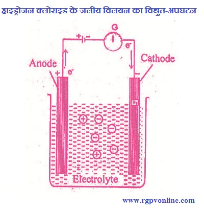

Q.13 : फैराडे के विद्युत्-अपघटन के नियमों को लिखिए।
उत्तर- विद्युत्-अपघटन- वे पदार्थ जो विद्युत् धारा के प्रवाह से विघटित हो जाते हैं, विद्युत्-अपघट्य (electrolyte) कहलाते हैं तथा विद्युत् धारा द्वारा इस विघटन की घटना को विद्युत्-अपघटन कहते हैं। इसका स्पष्टीकरण निम्नलिखित प्रयोग द्वारा किया जा सकता है- जब किसी विद्युत्- अपघट्य के विलयन में से विद्युत् धारा गुजारी जाती है तो आयन विपरीत दिशा में गति करते हैं अर्थात् धनायन कैथोड की ओर तथा ऋणायन ऐनोड की ओर चलते हैं।

चित्र 13.1 हाइड्रोजन क्लोराइड के जलीय विलयन का विद्युत-अपघटन
जब आयन इलैक्ट्रोड पर पहुँचते हैं तब वे आवेशहीन हो जाते हैं तथा उनमें वह गुण नष्ट हो जाता है जो आवेश के कारण होता है। इसे प्रारम्भिक क्रिया कहते हैं। इसके बाद वे एक-दूसरे से संयुक्त होकर या धातु के इलैक्ट्रोड या विलायक से क्रिया करके उदासीन अणु बनाते हैं। इसे द्वितीयक अभिक्रिया कहते हैं। इसे HCI के उदाहरण द्वारा समझाया जा सकता है -
हाइड्रोजन क्लोराइड का विद्युत्-अपघटन होने पर यह निम्नलिखित प्रकार से आयनीकृत हो जाता है -
HCl → H++ Cl-
इस प्रकार मुक्त हुए H+ कैथोड की ओर तथा Cl- ऐनोड की ओर गमन करके वहाँ अनावेशित हो जाते हैं।
इस प्रकार कैथोड पर हाइड्रोजन गैस मुक्त होती है। H+ +e- → H (कैथोडिक अपचयन)
H + H → H2(g) (ऐनोडिक ऑक्सीकरण)
जबकि ऐनोड पर क्लोरीन गैस मुक्त होती है।
CI- → Cl + e-
CI+CI → Cl2(g)
फैराडे के विद्युत्-अपघटन के नियम (Faraday's Laws of Electrolysis)- फैराडे ने विद्युत्-अमंघटन के दो नियम प्रतिपादित किए, जिनका वर्णन निम्नलिखित है -
(i) फैराडे का प्रथम नियम- "विद्युत्-अपघटन के समय इलैक्ट्रोड पर मुक्त (या एकत्रित) होने वाले पदार्थ की मात्रा, प्रवाहित की गयी विद्युत् मात्रा (आवेश) के समानुपाती (directly proportional) होती है।"
माना Q विद्युत् मात्रा में m धातु जमा होती है तो इस नियम के अनुसार,
m ∝ Q
लेकिन Q = Ct जहाँ C ऐम्पियर में धारा तथा t धारा प्रवाह का समय है।
अतः m ∝ Ct
या m = ZCt
जहाँ Z एक नियतांक है इसे धातु का विद्युत्-रासायनिक तुल्यांक (electrochemical equivalent) कहते हैं।
यदि C =1 ऐम्पियर, t=1 सेकण्ड हो तो
m = Z
अतः विद्युत्-रासायनिक तुल्यांक को निम्नलिखित प्रकार से परिभाषित कर सकते हैं - "किसी विद्युत्-अपघट्य का विद्युत्-रासायनिक तुल्यांक पदार्थ की उस मात्रा के बराबर होता है जो 1 ऐम्पियर की धारा 1 सेकण्ड तक प्रवाहित करने पर इलैक्ट्रोड पर मुक्त होती है।"
(ii) फैराडे का द्वितीय नियम - ''जब एक ही शक्ति की विद्युत् धारा समान समय पर विभिन्न विद्युत्-अपघट्यों के विलयनों में प्रवाहित की जाती है, तो इलैक्ट्रोडों पर एकत्रित पदार्थों की मात्राएँ उनके रासायनिक तुल्यांकों के अनुक्रमानुपाती होती हैं।"
माना इलैक्ट्रोडों पर मुक्त होने वाले पदार्थों की मात्राएँ क्रमशः m1,m2, व m3 आदि हैं। तथा उनके तुल्यांकी भार क्रमशः E1, E2, तथा E3, हैं तो इस नियम के अनुसार,
m1 / E1 = m2 / E2 ............. आदि
या m1 / E1 = m2 / E2
किन्तु फैराडे के प्रथम नियम के अनुसार,
m1/m2 = Z1Ct / Z2Ct = E1 / E2
Z1/Z2 = E1/E2
अतः, Z ∝ E
अतः किसी पदार्थ का विद्युत्-रासायनिक तुल्यांक उसके रासायनिक तुल्यांक के समानुपाती होता है।
उपयोग - फैराडे के नियम के प्रमुख उपयोग निम्नलिखित हैं -
(i) इस नियम की सहायता से तत्वों का रासायनिक तुल्यांकी भार (chemical equivalent weight) ज्ञात कर सकते हैं।
माना किसी प्रयोग में पदार्थों के x तथा y ग्राम मुक्त हुए। यदि x का तुल्यांकी भार ज्ञात हो तो y का तुल्यांकी भार निम्नलिखित समीकरण से ज्ञात कर सकते हैं –
मुक्त हुए x का भार / मुक्त हुएy का भार = x का तुल्यांकी भार / y का तुल्यांकी भार
(ii) यदि किसी तत्व की संयोजकता (valency) ज्ञात हो तो उस तत्व का परमाणु भार ज्ञात कर सकते हैं।
परमाणु भार।
तुल्यांकी भार = संयोजकता।